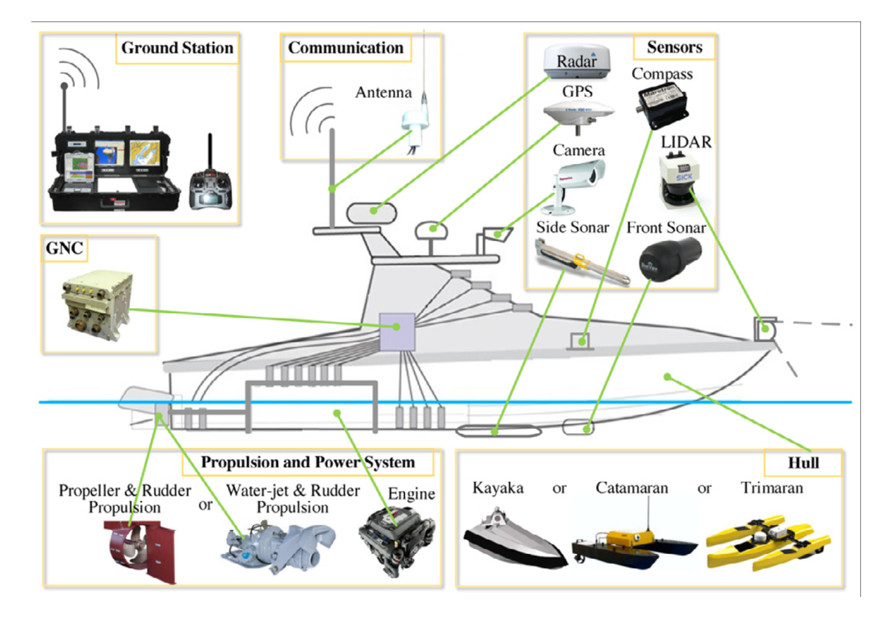
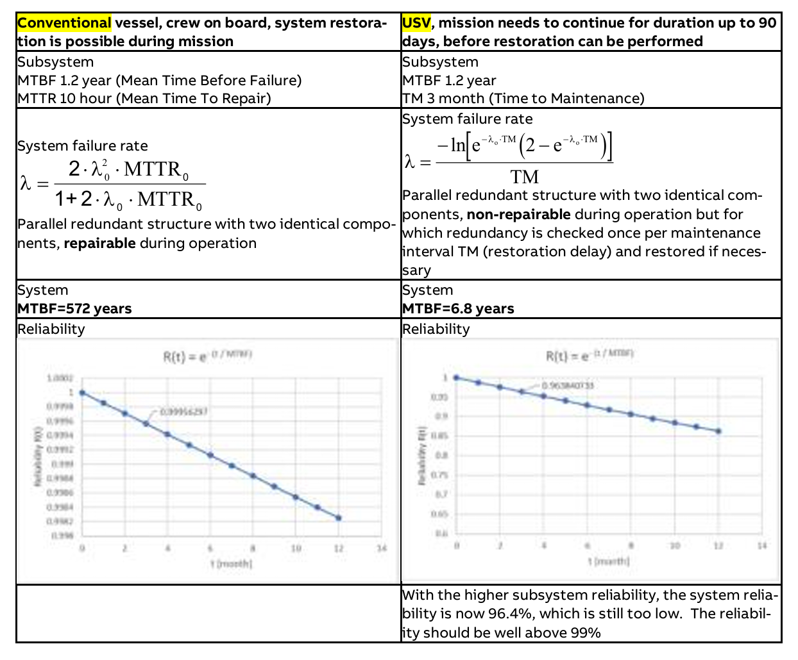

Acknowledgements
Firstly, I would like to thank ST Engineering for giving me the opportunity to work on this project. This project would not have been possible without the support of many dedicated ST Engineering members. I am especially grateful to Ang Ming Xiang, my ST Engineering supervisor and Nathanel Tan, the Head of ST engineering Unmaned & Integrated System Department for providing the guidance and technical input for this project.
I also wish to acknowledge the support provided by the NUS College of Engineering, particularly Mr Royston, and Mr Graham from the Engineering Design and Innovation Centre. I would also like to thank Mr Eugene Ee for taking the time to review my project and provide valuable advice.
List of Common Acronyms
| Acronym | Definition |
|---|---|
| USV | Unmanned Surface Vessel |
| PDS | Power Distribution System |
| PCB | Printed Circuit Board |
| PLC | Programmable Logic Controller |
| MCU | Microcontroller |
| DC | Direct Current |
| MTBF | Mean Time Before Failure |
| MTTR | Mean Time To Repair |
| CAN | Controller Area Network |
| PG | Power Good |
1. Summary
This project focuses on developing a compact Power Distribution System (PDS) for ST Engineering’s Unmanned Surface Vehicle. The PDS is a critical component of the vehicle’s electrical system, designed to distribute and control the power to different parts of the vehicle.
The new PDS developed mainly consists of a compact and robust power switching printed circuit board (PCB) solution with a backplane system for the ease of modularity and integration. The system also includes key features such as power line protection and accurate power status monitoring and reporting, to ensure its functionality even after a power line fault has occured.
2. Background
2.1 Introduction
Unmanned Surface Vehicles (USVs) are boats or ships that operate on the water surface without an onboard crew. In recent years, the USV market has grown rapidly, particularly within the Asia-Pacific region.
USVs are commonly classified by size, with three main categories used in the maritime industry. Among these, medium-sized USVs—typically 2 to 24 meters in length—are the target vehicle of this project.
Within the overall USV market, more than half of all vessels are developed for defence applications. Most of these defence-oriented USVs weigh under 2,000 kg, placing them within the small or medium-size categories.
Figure 1: USV Market Size and Distribution
To enable autonomous operation, USVs rely on a suite of sensors and onboard equipment usually powered by engines or batteries. These power sources supply energy through an integrated Power Distribution System — the central focus of this project.

Figure 2: Common USV On-board Devices
2.2 Existing Solutions
Most USVs today still adopt PDS design similar to those used in conventional manned vessels. These systems typically rely on traditional marine electrical architectures that were not specifically designed for autonomous or highly integrated operations.
Common components found in such PDS setups include transformers, DC converters, Programmable Logic Controllers (PLCs), relays, fuses, and circuit breakers. These components are interconnected using cables, terminal blocks, and wiring harnesses to form the overall electrical network.

Figure 3: Conventional Marine Direct Current (DC) PDS Architecture
3. Problem Analysis
To better understand the challenges that may arise when conventional power distribution systems (PDS) are applied to medium-sized USVs, I conducted an analysis of two representative case studies. The first is a literature review of Onboard DC Grid™, a marine power system developed by ABB, one of the leading power system providers in the maritime industry. The second is a real-world examination of the PDS used in ST Engineering’s medium-sized USVs.
3.1 Onboard DC Grid™
Onboard DC Grid™ is an advanced power distribution system designed to manage the generation, storage, and distribution of direct current (DC) power across onboard applications.
In 2020, ABB has published the report, Unmanned Surface Vehicles/Vessel (USV) Reliable Power and Propulsion Architecture Characterization, in response for a Request for Information (RFI) from the US government. In the report, the company introduce this product and highlight some problems on the current USV power architecture
The primary concern identified in this report regarding the current power distribution solutions used in USVs is their negative impact on mission success rates. Although USVs use many of the same power subsystem components as conventional manned vessels, these components exhibit the same Mean Time Between Failures (MTBF) but a much higher Mean Time To Repair (MTTR). This difference arises because, unlike manned vessels, faults that occur during a USV’s mission cannot be immediately detected, diagnosed, or repaired due to the absence of onboard crew.
While initial faults may not be mission-critical, they can propagate into secondary failures affecting systems essential for the vehicle’s operation. Consequently, the overall effective MTBF of the USV system becomes shorter than that of a conventional vessel, resulting in a higher likelihood of mission failure.

Figure 4: USV Power System Reliability Comparison with Conventional Manned Vessel
3.2 ST Engineering USV PDS
In this project, I had the opportunity to work directly with ST Engineering’s USVs and examine their PDS in a real operational setting.

Figure 7: ST Engineering’s USV Current PDS Architecture
The current system conists primarily of commercial fuses and relays, coordinated through a dedicated power-system PLC. Power channel switching is controlled by continuous digital signals from the PLC, which govern when individual subsystems are energised or disconnected. This switching capability enables the sequential start-up of the main compute stacks during vessel initialization, as well as the selective shutdown of non-essential devices to improve power efficiency during missions.
Two main problems exists in the current system:
Size Constraint: Currently, the PDS is housed within the equipment racks of the USV. However, due to the bulky nature of the conventional power distribution components, the system occupies a significant portion of the rack’s internal volume. This oversizing poses challenges during integration, as it limits the available space for other essential components and makes maintenance tasks more cumbersome. The oversized system also complicates cable management within the rack, leading to potential issues with accessibility.
Here are the dimension statistics of the current PDS used in ST Engineering USV and a estimation of the equipment rack space it occupies:
| PDS Sections | Length (mm) | Width (mm) | Height (mm) | Equipment Rack Space Occupied (%) |
|---|---|---|---|---|
| Auxilary Power Box | 750 | 570 | 150 | 10 |
| Main Power Distribution Unit | 890 | 1200 | 266 | 15 |
Table 1: Current PDS Size Statistics
What is more, ST Engineering is designing USVs for 3 different sizes with the following dimension statistics:
| USV Model Name | Length (m) | Width (m) |
|---|---|---|
| Goldfish | 10 | 2.5 |
| Bellagio | 15 | 4 |
| Puma | 17.5 | 5.2 |
Table 2: ST Engineering’s USV Size Statistics
With the current PDS being already oversized in medium size vehicle Puma and Bellagio, it is foreseeable that the system will be even more ill-suited for the smaller USV models like Goldfish. Therefore, there is a pressing need to redesign the PDS to be more compact and efficient, ensuring it can fit within the constraints of all USV models while still delivering reliable performance.
Existance of Single Pont of Failure: The current PDS lacks both redundancy and fault-tolerance, making it highly susceptible to single points of failure.
For instance, if the PLC of PDS fails, the consequences can be severe. Because the system’s control logic requires each power channel to remain continuously energised by a digital HIGH signal from the PLC, the loss of this signal immediately de-energises all PLC-controlled relays. This results in a complete shutdown of all subsystems powered through these channels. Such a failure mode presents a significant operational risk to the USV and may even lead to the total loss of the vessel while at sea.
Lack of power status indications: ST Engineering’s USVs currently operate under the principle that if a fault is not classified as critical, the vehicle will continue its mission. However, the existing PDS lacks adequate power-status monitoring and reporting capabilities. This limitation makes it difficult to assess the health and performance of the power distribution system in real time and to detect early signs of degradation or malfunction. As a result, non-critical issues may go unnoticed and remain unisolated from the main power network, allowing them to propagate into critical failures that ultimately reduce the overall mission success rate.
4. Design Statement
Targeting the above identified problems, the design statement of this project are summarised as:
4. Value Proposition
4.1 Stakeholders
The first group of stakeholders in this project are the members of the ST Engineering USV Team, who will directly involve in the design, integration, and testing of the new USV. Their primary task is to ensure that the new platform meets all technical and operational requirements set by users.
The second group of stakeholders are the end-users of the USVs, such as maritime security agencies, port authorities, and research institutions. These organisations deploy the vehicles for operational tasks and are also responsible for performing maintenance and repair activities when faults occur.
4.2 Benefits
The new PDS offers several key benefits to its stakeholders::
| Benefits | Rationale |
|---|---|
| Compact Design | To ST Engineering USV Team - A smaller PDS footprint allows more efficient use of space within the USV’s equipment racks. This increases design flexibility and scalability across different USV sizes and configurations. |
| Enhanced Fault Tolerance | To USV Users - A more robust PDS reduces the impact of component failures, improving overall system reliability and increasing mission success rates. |
| Advanced Power Monitoring and Reporting | To USV Users - Real-time power-status insights support early detection of abnormal conditions. This enables proactive maintenance, prevents minor issues from escalating into critical faults, and reduces repair costs and downtime. |
5. Design Requirments
5.1 Design Standards
To ensure the new PDS meets industry best practices and regulatory requirements, the design standards were adopted: IEEE Recommended Practice for the Design and Application of Power Electronics in Electrical Power Systems (IEEE Std 1709-2010) [4]. This standard provides comprehensive guidelines for designing power electronic systems in maritime applications, covering aspects such as electrical safety, electromagnetic compatibility, thermal management, and environmental considerations.
5.2 Technical Specifications
To begin, the new PDS must match or exceed the technical performance of the existing system. Based on an evaluation of the current PDS capabilities as well as suggestions given by the ST USV engineering team, the following technical requirements were identified:
| Technical Capabilities | Specifications |
|---|---|
| Physical Dimension | < 445mm x 600mm x 133mm |
| Application Voltage | 12V and 24V DC |
| Maximum Continuous Current | 30A |
| Maximum Transient Current | 100A |
| Fault Protection | Overvoltage/Undervoltage/Overcurrent/Short Circuit |
| Fault Reponse Time | <10ms |
| Power System Monitoring | Current, Internal Temperature, Power Good(PG), Fault Status |
| Communication Protocol | Digital/Analog/CAN 2.0 |
Table 7: Core Technical Requirements for the New PDS
The 30 A current specification is based on the maximum continuous current draw of the existing PDS—20 A, as measured during the operation of the searchlight according to its datasheet—augmented with a 50% design margin. This additional margin ensures sufficient headroom to handle transient overloads without compromising system reliability.
A power consumption chart was also drawn up to verify that the above technical specifications are able to supply enough power which will be attached in the Appendix section.
5.3 Functional Sub-goals
In addition to meeting the technical specifications, the new PDS must achieve three key functionalities to satisfy user requirements. Each of these is described in detail in the corresponding section below.
| Key Functionalities | Section Number |
|---|---|
| Compact and robust power-switching solutions for each channel | Section 7 |
| Integrated power-line protection for transient and fault conditions | Section 8 |
| Real-time monitoring and reporting of power status and current consumption for each channel | Section 6 |
Table 5: PDS System Functionalities and the Corresponding Report Sections
5.4 Environmental Requirments
Since this product is intended for use in maritime environments, the following environmental parameters were selected from the design standrad mentioned above. These parameters represent the most relevant constraints for this project.
| Parameters | Constraint |
|---|---|
| Ambient Temperature | ≤ 50°C |
| Vibration | ≥ 22 Hz |
| Humidity | Approximately 80% |
Table 6: Environmental Design Constraints for Backward Compatibility
5. System Overview
This section presents the summarised architectures to provide a high-level overview of the systems. Subsequent sections will explain how the design choices support the overall project goals.

Figure 11: Summarised System Architecture of the developed PDS
6. Power Switching
The new PDS is designed to provide compact and robust power switching solutions for each power channel. And this is achieved through two main improvements, moving from traditional relay + PLC combination towards PCB backplane system as well as improving the power switching logic.
6.1 Moving towards PCB
6.1.1 Comparison of PLC + Relay vs MCU + PCB System
As mentioned in the case study above, the current PDS adapted in ST Engineering USV relies on a combination of a Programmable Logic Controller (PLC) and SSR relays to manage power switching. This is also the common approach used in conventioanl PDS in marine industry. Another possibl approach is to use a MCU + PCB system, which involves a substantial amount of customisation and design efforts.
The below table summarises the key advantages and disadvntages between the two approaches:
| Aspect | PLC + Relay | MCU + PCB System |
|---|---|---|
| Size and Weight | - Bulky and heavy due to discrete components - Requires additional space for wiring and terminal blocks |
- Compact and lightweight due to integrated design - Reduces wiring complexity and space requirements |
| Reliability and Durability | - industrially certified for maritime usage - proper insulation and protection done based on industrial standards |
- Larger efforts are required to design for robustness |
| Customisability and Scalability | - Limited customisation options - Easily scalable by adding or modifying Relay/PLC modules |
- Highly customisable to specific requirements - More difficult to replace/scale up |
6.1.2 Targeting limitations in MCU + PCB System
While the MCU + PCB system offers significant advantages in achieving size reduction, it also presents the above mentioned limitations that need to be addressed to ensure successful implementation.
6.2 Customisable Power Switching Logic
As mentioned in Section, the current control logics relied on a continous signal from PLC. This approach means that if there is any signal loss from the PLC, be it PLC failure or loose connection, the power supply maybe disturbed. In this project, I would like to introduce a new user-customisable control logic using a latching PCB design to mitigate this risk.
6.2.1 Comparison Between New and Old Control Logic
The diagram below illustrates the current control logic flow and the proposed new control logic.

Figure 18: Current Control Logic in the PDS

Figure 19: New Control Logic proposed
The key difference between the two control logics lies in how the power channel’s ON state is maintained. In the current system, the ON state is sustained by a continuous digital HIGH signal from the PLC. In contrast, the new control logic employs a latching mechanism: a momentary HIGH signal from the MCU toggles the power channel ON at startup, and the channel is only turned OFF when a subsequent continuous HIGH signal is applied. This design ensures that once a power channel is turned ON, it remains ON even if the MCU signal is lost. This significantly enhances fault tolerance, as transient or permanant PLC/MCU failures will not inadvertently disrupt power delivery to critical subsystems during missions.
6.2.3 User-customisability with latching PCB Design
Although the latching PCB design enhances fault tolerance, it may introduce certain operational limitations. For example, if the MCU fails while a power channel is ON, the user cannot remotely turn off that channel, even for systems that are not required during mission operation (e.g., onboard lights used only for maintenance), which could reduce overall power efficiency. To address this, a separate PCB was designed to implement the latching mechanism while remaining pluggable from the main MOSFET relay board. This modular design makes the control logic user-customisable, allowing operators to choose between the new latching mechanism or revert to the traditional continuous-signal control logic according to their operational requirements.

Figure 20: Latching PCB Schematic and Layout

Figure 21: 3D model of the MOSFET Relay Board with Latching PCB Integrated
7. Power Protection
Power protection is crucial in ensuring the safety and reliability of the PDS. Current PDS in ST Engineering USV lacks adequate protection features, making it vulnerable to transient and fault situations.
7.1 Protection Requirements
The types of faults that the new PDS should be able to protect against are derived from the design standards outlined in Section 5.3 . These include overvoltage, undervoltage, overcurrent, and short-circuit conditions.
7.2 Choice of MOSFET Gate Driver IC - TPS4800
As a result, the MOSFET gate driver IC TPS4800 from Texas Instruments is selected among all other MOSFET gate driver IC for its ability to achieve all the above protection features while satisfying the technical specifications mentioned in Section 5.1. The key features of the TPS4800 are summarised in the table below:
| Key Features | Specifications |
|---|---|
| Operating Voltage | 8V to 60V DC |
| Maximum Continuous Current | 30A |
| Overvoltage Protection Threshold | Adjustable between 10V to 60V DC |
| Undervoltage Protection Threshold | Adjustable between 6V to 54V DC |
| Overcurrent Protection Threshold | Adjustable between 5A to 50A |
| Overcurrent Protection Response Time | <10ms |
| Short-Circuit Protection Response Time | <1µs |
Table 2: Key Features of TPS4800 MOSFET Gate Driver IC

Figure 37: Configuring TPS4800 Protection Parameters
Besides the gate driver IC, the IPTC014N10NM5 MOSFET was chosen as it has a top side cooling package. This allows the use of thermal pads to conduct the heat from the MOSFET to the top of the battery hull [6].
8. Power Monitoring
The power monitoring system is responsible for monitoring and reporting power status and power(current) consumptions in each channel. This section will detail the various features implemented to achieve this functionality.
8.1 Power Good Status
The Power Good (PG) status is a critical indicator of the health and stability of the power supply. It provides real-time feedback on whether the power supply is operating within acceptable parameters, allowing for proactive management of the power system.
To achieve the PG monitoring functionality, a TPS3711DDCR voltage supervisor from Texas Instruments is selected for its simplicity and reliability. The TPS3711 monitors the output voltage of the power channel and asserts the PG signal when the voltage is within the specified range.
8.2 Fault Reporting
As mentioned in Section 7.1, the MOSFET gate driver IC TPS4800 is selected for its built-in protection features which collectively protect the vehicle from electrical fault, improving the reliability of the system. At the same time, the TPS4800 is also able to report fault status via its FAULT pin. This pin goes LOW when any of the protection features are triggered, allowing the microcontroller to log and report the fault event.
8.3 Power(Current) Consumption Statistics
Accurate power(current) consumption monitoring is essential for effective power management and optimization. The AMC1301DWVR, a precision isolated delta-sigma modulator from Texas Instruments, is selected for its high accuracy and isolation capabilities.
8.4 Fault Analysis Logics
The diagram below illustrates the fault analysis logic flow implemented in the new PDS.

Figure 32: Fault Analysis Logic Flow
8.5 Overall Dat Collection and Reporting
8.5.1 Digital/Analog from Relay PCBs to MCU
The PMB uses a combination of digital and analog signals to communicate power status and consumption data to the microcontroller unit (MCU). The digital signals include the Power Good (PG) status and fault status, while the analog signals represent the current consumption data.
8.5.2 CAN Bus from MCU to PLC
The Controller Area Network (CAN) bus is employed for communication between the MCU on the Backplane and the PLC of the USV. CAN bus is chosen for its robustness, reliability, and ability to handle high-speed data transmission in noisy environments, making it ideal for maritime applications.
9. Prototyping and Testing
9.1 Testing of Power Protection Features
Several key safety features were configured and tested:
| Feature | Test Result |
|---|---|
| Overcurrent in Discharge (OCD) | Used a load tester to verify that discharging above the set current value for the specified time would turn off the discharge MOSFET. |
| Overload in Discharge Protection (AOLD) | Almost instantaneous cut off when discharging above the set current limit. |
| Over Charging Current Protection (OCC) | When the charging current is higher than the preset threshold, the charging MOSFET is turned off. |
Table 21: Test Results for TPS4800 Protection Features
11. Future Project Timeline
The following timeline outlines the proposed development plan for holiday time and the next semester. Key milestones include hardware revisions, Subsystem integration and testing phases to ensure continued reliability and performance enhancements.

Figure 53: Future Project Timeline
References
- Texas Instruments, “bq34110 Multi-Chemistry CEDV Battery Gas Gauge for Rarely Discharged Applications,” bq34110 datasheet, Aug. 2015 [Revised Nov. 2016]
- “Complete Guide to Lipo Battery Voltage,” Ufine Battery [Official], https://www.ufinebattery.com/blog/useful-overview-of-lipo-battery-voltage/ (accessed Apr. 2, 2025).
- “LiPo vs Lithium Ion Batteries for Unmanned & Robotics Applications | Unmanned Systems Technology,” Unmanned Systems Technology, Jan. 26, 2023. https://www.unmannedsystemstechnology.com/feature/lipo-vs-lithium-ion-batteries-for-unmanned-robotics-applications/
- “Gas Laws,” Gas laws, https://www.chem.fsu.edu/chemlab/chm1045/gas_laws.html (accessed Apr. 2, 2025).
- Texas Instruments, “bq40z50 Advanced Gas Gauge Circuit Design,” Application Report, Nov. 2012 [Revised Sep. 2014]
- Infineon, “Recommendations for Board Assembly of Infineon Packages with Dual Row Gullwing Leads,” Nov 2020
- “Subconn low profile - 9 contacts,” Underwater Technology, https://www.macartney.com/connectivity/subconn/subconn-low-profile-series/subconn-low-profile-9-contacts/ (accessed Apr. 2, 2025).
- A. Fink et al., “Design, Implementation, and Strategy of the Polaris and Sirius AUVs,” Cornell Univ. Autonomous Underwater Vehicles, Tech. Rep., Jul. 2024. [Online]. Available: https://robonation.org/app/uploads/sites/4/2024/07/RS24_TDR_Cornell-compressed.pdf
- [1] N. Becker, A. Dellacqua, B. Knutson, M. Oinonen, R. Pafford, and C. Tucker, “Design Review of Talos: An Autonomous Underwater Vehicle by The Ohio State University’s Underwater Robotics Team,” The Ohio State Univ., Tech. Rep., Jun. 2023. [Online]. Available: https://robonation.org/app/uploads/sites/4/2023/06/TDR_THEOhioStateUniversity_RS2023-compressed.pdf
- Texas Instruments, “Battery Gauging Algorithm Comparison,” Application Report, Dec. 2023
- Texas Instruments, “Achieving The Successful Learning Cycle,” Application Report, Jul. 2018
Appendix A: Relay and Latch PCB Schematics
Appendix B: Relay and Latch PCB Layouts
Appendix C: Relay Circuit Calculation